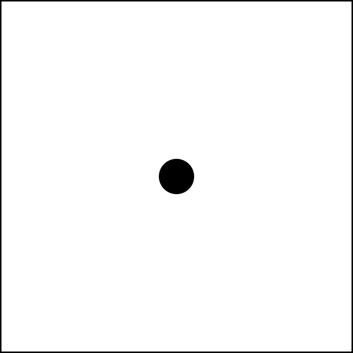

Squares
These planting grids show common square foot gardening spacing patterns. They help visualize how many plants or seeds can fit in one square foot.

These planting grids show common square foot gardening spacing patterns. They help visualize how many plants or seeds can fit in one square foot.
